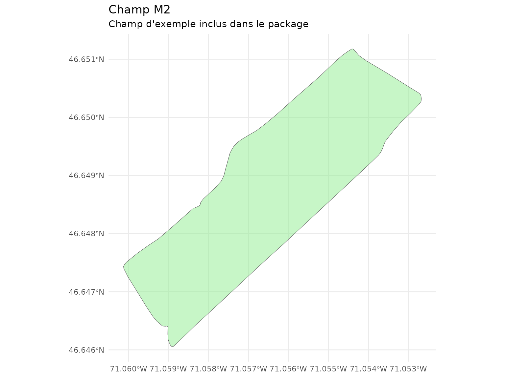

Introduction
L’analyse du vent est cruciale pour: - Planifier l’implantation de haies brise-vent - Estimer l’ombrage des cultures - Optimiser le drainage et la circulation de l’air - Prévoir les risques de renversement des cultures
Le package covariablechamps fournit des outils pour
obtenir et visualiser les données de vent depuis NASA
POWER.
Chargement du champ M2
Le package inclut un champ d’exemple (M2) situé au
Québec.
champ <- st_read(system.file("extdata", "M2.shp", package = "covariablechamps"))
#> Reading layer `M2' from data source
#> `/home/runner/work/_temp/Library/covariablechamps/extdata/M2.shp'
#> using driver `ESRI Shapefile'
#> Simple feature collection with 1 feature and 65 fields
#> Geometry type: POLYGON
#> Dimension: XY
#> Bounding box: xmin: -71.06012 ymin: 46.64605 xmax: -71.05268 ymax: 46.65118
#> Geodetic CRS: WGS 84
ggplot() +
geom_sf(data = champ, fill = "lightgreen", alpha = 0.5) +
theme_minimal() +
labs(title = "Champ M2",
subtitle = "Champ d'exemple inclus dans le package")
Obtention des données de vent depuis NASA POWER
La fonction obtenir_rose_vents() récupère les données de
rose des vents depuis l’API NASA POWER.
Note: Cette opération nécessite une connexion internet.
# Obtenir la rose des vents pour le champ M2
rose <- obtenir_rose_vents(
polygone = champ,
date_debut = "20230101",
date_fin = "20231231",
hauteur = "10m"
)
# Examiner la structure des résultats
names(rose)Structure des résultats
La fonction retourne une liste contenant:
| Élément | Description |
|---|---|
data |
Données brutes de l’API |
directions |
Vecteur des 16 directions (0-337.5°) |
wd_pct |
Pourcentages de fréquence par direction |
wd_avg |
Vitesse moyenne du vent par direction (m/s) |
classes |
Matrice des classes de vent par direction |
all_classes |
Pourcentages globaux par classe de vent |
coordonnees |
Coordonnées du point (longitude, latitude) |
Intégration avec l’analyse des distances au vent
Une fois la direction du vent connue, vous pouvez calculer les distances:
# Utiliser la direction dominante pour l'analyse du vent
# (requiert des arbres détectés depuis LiDAR)
direction_vent <- direction_dominante
# Calculer les distances amont/aval
dist_dir <- calculer_distances_amont_aval(
arbres_sf = arbres,
angle_vent = direction_vent,
champ_bbox = champ,
buffer_arbre = 3
)
visualiser_distances_vent(dist_dir, type = "comparaison")Applications agricoles
Haies brise-vent
- Planifier l’orientation des haies perpendiculairement au vent dominant
- Estimer la zone de protection (1-10H où H = hauteur de la haie)
Références
- NASA POWER - Données météorologiques mondiales
- Documentation API